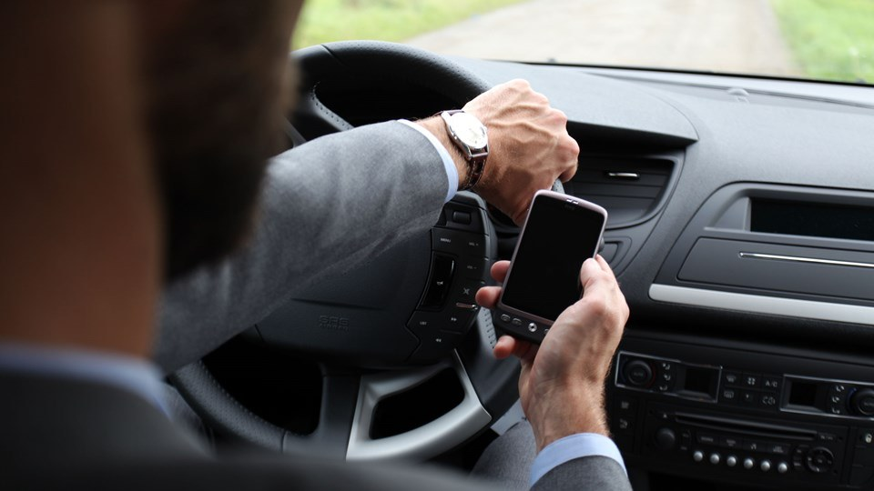

Både i 2002 og i 2017 kom flest unge til skade i trafikken. Omkring en fjerdedel af de tilskadekomne var 15-24 år, mens cirka 18 pct. var 25-34 år og 14 pct. var 35-44 år. Generelt falder antallet af skader, jo ældre aldersgrupperne er. Det hænger for de ældre aldersgrupper bl.a. sammen med, at der er færre personer i disse grupper.
I 2002 registrerede politi, skadestuer og sygehuse tilsammen over 50.000 personskader i færdselsuheld. Det er det højeste antal siden 2001, hvor Danmarks Statistik første gang registrerede skader på skadestuer og sygehuse. Siden da er antallet af skader i færdselsuheld generelt blev færre år for år. Men fra 2014 og frem har antallet af personskader ligget stabilt på omkring 35.000.